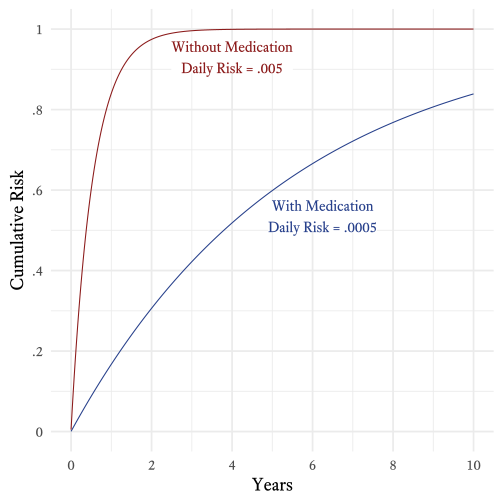
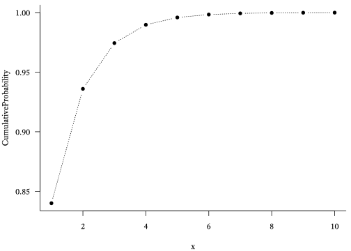

3.7 Geometric Distributions}
Table 2.5: Features of Geometric Distributions
| Feature | Symbol |
|---|---|
| Probability of success in each trial | \(p\in[0,1]\) |
| Sample Space | \(x \in \{1,2,3,\ldots\}\) |
| Mean | \(\mu = \frac{1}{p}\) |
| Variance | \(\sigma^2 = \frac{1-p}{p^2}\) |
| Skewness | \(\gamma_1 = \frac{2-p}{\sqrt{1-p}}\) |
| Kurtosis | \(\gamma_2 = 6 + \frac{p^2}{1-p}\) |
| Probability Mass Function | \(f_X(x;p) = (1-p)^{x-1}p^x\) |
| Cumulative Distribution Function | \(F_X(x;p) = 1-(1-p)^x\) |
Atul Gawande (2007Gawande, A. (2007). Better: A surgeon’s notes on performance. New York, NY: Metropolitan Books., pp. 219–223) tells a marvelous anecdote about how a doctor used some statistics to help a young patient with cystic fibrosis to return to taking her medication more regularly. Because the story is full of pathos and masterfully told, I will not repeat a clumbsy version of it here. However, unlike Gawande, I will show how the doctor’s statistics were calculated.
According to the story, if a patient fails to take medication, the risk of a person with cystic fibrosis getting a bad lung illness on any particular day is 0.005. If medication is taken, the risk is 0.0005. Although these probabilities are both close to zero, over the the course of a year, they result in very different levels of risk. Off medication, the patient has about a \(0.84\)% chance of getting sick within a year’s time. On medication, the patient’s risk falls to \(0.17\)%. As seen in Figure 2.21, the cumulative risk over the course of 10 years is quite different. Without medication, the probability of becoming seriously ill within 10 years at least once is almost certain. With medication, however, a small but substantial percentage (~\(16\)%) of patients will go at least 10 years without becoming ill.
Figure 2.21: The cumulative risk of serious lung disease with and without medication
Such calculations make use of the geometric distribution. Consider a series of Bernoulli trials in which an event has a probability \(p\) of occurring on any particular trial. The probability mass function of the geometric distribution will tell us the probability that the xth trial will be the first time the event occurs.
\[\begin{equation*} f_X(x;p)=(1-p)^{x-1}p^x \end{equation*}\] Where \[\begin{align*} X &= \text{A random variable with a geometric distribution}\\ f_X &= \text{The probability mass function of}~X\\ x &= \text{The number of Bernoulli trials on which the event first occurs}\\ p &= \text{The probability of an event occurring on a single Bernoulli trial}\\ \end{align*}\]
In R, the probability mass function of the geometric distribution is calculated with the dgeom function:
# Make a sequence of integers from 1 to 10
x <- seq(1, 10)
# Generate the probability mass function with p = 0.6
Probability <- dgeom(x, prob = 0.6)
# Basic plot of the geometric distribution's probability mass function
plot(Probability ~ x, type = "b") Figure 2.22: Geometric Probability Mass Function (p = 0.6)

The cumulative distribution function of the geometric distribution was used to create Figure 2.21. It tells us the probability that the event will occur on the \(x^{th}\) trial or earlier:
\[\begin{equation*} F_X(x;p)=1-(1-p)^x \end{equation*}\]
In R, the cumulative distribution function of the geometric distribution uses the pgeom function:
# Generate the cumulative distribution function with p = 0.6
CumulativeProbability <- pgeom(x, prob = 0.6)
# Basic plot of the geometric distribution's cumulative distribution function
plot(CumulativeProbability ~ x, type = "b") Figure 2.23: Geometric Cumulative Distribution Function (p = 0.6)
